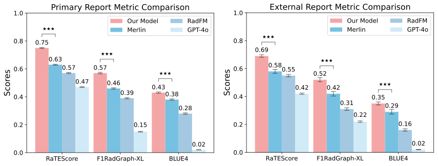
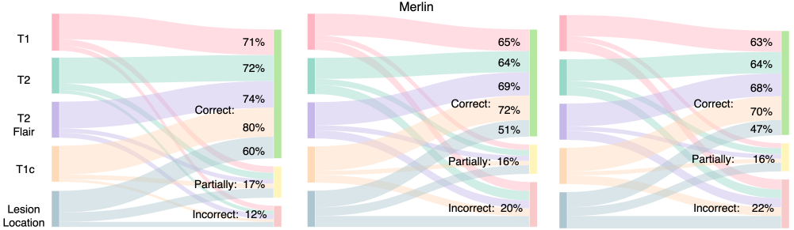
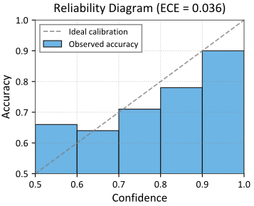
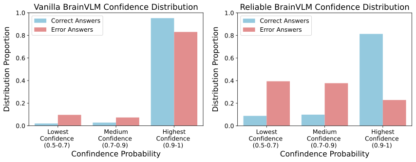

01 · Diagnosis
Comprehensive tumor prediction
The model predicts across the major WHO CNS5 categories and most clinically relevant subtypes.
Each diagnosis is accompanied by a radiology-style report and a calibrated confidence estimate.
Classification, explanation, and reliability are designed as one case-level output.
The model predicts across the major WHO CNS5 categories and most clinically relevant subtypes.
Generated findings describe enhancement, signal intensity, lesion location, and other imaging attributes supporting the impression.
Confidence helps distinguish straightforward predictions from cases that may benefit from a second candidate or human review.
Each report metric is paired with a short clinical reading on the left and the corresponding figure on the right.
BrainVLM leads both cohorts on the complementary report metrics: primary / external RaTEScore 0.75 / 0.69, RadGraph-XL F1 0.57 / 0.52, and BLEU-4 0.43 / 0.35. The combination reflects both semantic content and lexical agreement rather than fluency alone.

An LLM-as-a-judge assessment found 80% correctness for contrast enhancement, 71–74% for T1, T2, and T2-FLAIR signal patterns, and 60% for lesion localization. Localization is the hardest attribute, but still exceeds the strongest baseline at 51%.

Confidence is evaluated for reliability and used to support confidence-triggered Top-2 review of ambiguous cases.

Reliable BrainVLM concentrates correct answers in the highest-confidence range while reducing overconfident errors, creating a practical signal for when a case deserves closer review.

The revised confidence analysis contrasts vanilla and reliable BrainVLM across confidence bands. This makes calibration failures easier to identify and supports a confidence-triggered Top-2 review when the first prediction is uncertain.